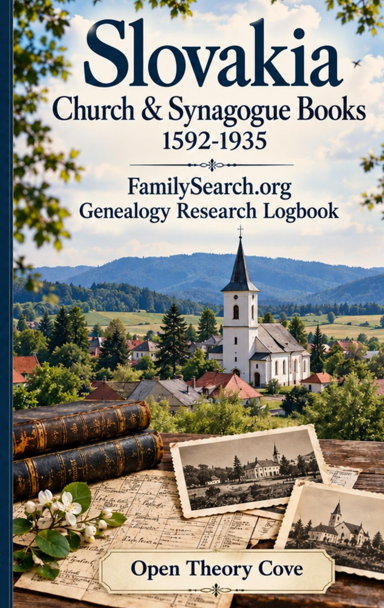

Slovakia Church & Synagogue Books 1592-1935
Keep your Slovak genealogy research organized in one place.
Researching family history can quickly lead to scattered notes, copied citations, handwritten names, translations, record images and loose sheets of paper. This genealogy research logbook helps keep those discoveries together while researching Slovak ancestors and historical church and synagogue records.
Created especially for researchers working with the Slovakia Church and Synagogue Books, 1592-1935 collection, the logbook provides a consistent place to record each discovery and return to your research without wondering where you left off.
View on Amazon →Keep each discovery connected to its source
Two-page record spreads keep source information and research notes together, helping you build a more organized record of your family-history work.
Less loose paper. More organized research. More family history preserved.